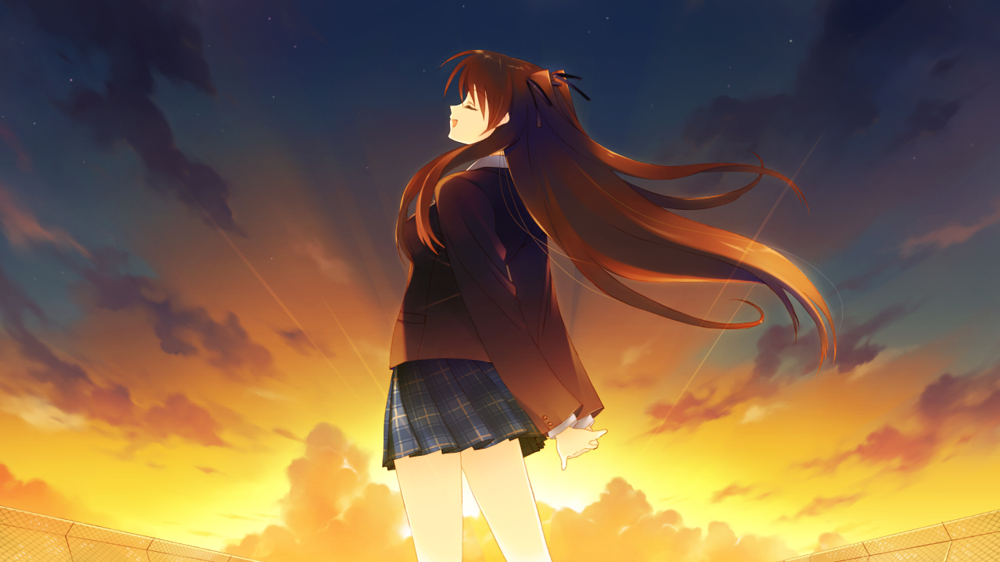
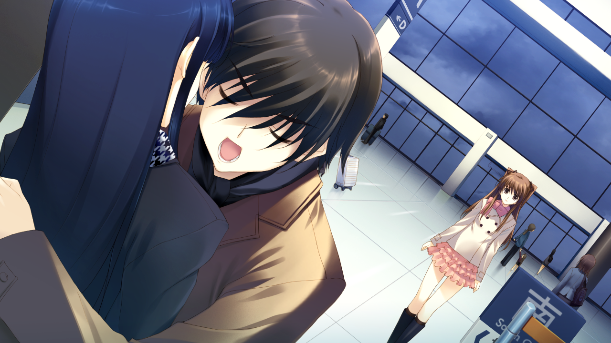
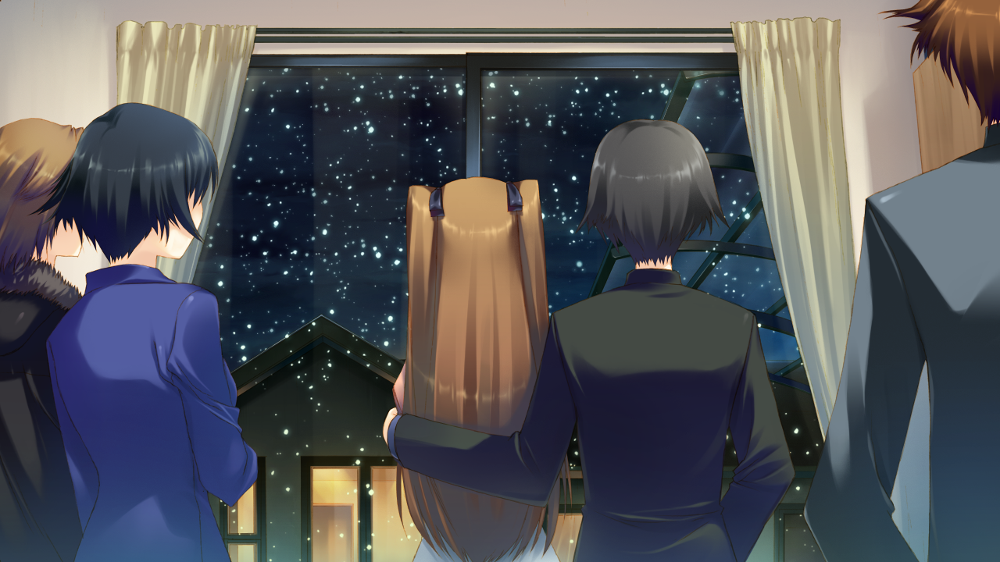

Haruki Kitahara is worried about the band club's school festival.
In the sunset one day, he meets two girls who love the same song,
Ogiso Setsuna and Touma Kazusa.
They form a band and get a big success at the school festival
After the performance, Setusna suddenly confesses her love to Haruki Kitahara.
They get involved, and the relationship between three of them begins to fall apart......

Kazusa and Haruhi have always had a crush on each other.
But they can't say anything due to personality issues.
The original song they played, "Unconveyed Love"
is haruki wrote for kazusa.
After the show, Kazusa kissed him while he was sleeping.
And all this is watched by Setsuna.
In order not to be alienated by their growing relationship,
Setsuna decides to confess.
One twisted decision leads to an explosion of feelings between the three.
Haruki betrays Setsuna and makes out with Kazusa.
Kazusa leaves Japan leaving them behind.

Three years after betraying setsuna and parting with Kazusa,
Haruki and Setsuna maintain a awkward and bitter relationship.
They are neither lovers nor friends.
He stopped playing the guitar and she stopped singing.
One day, Haruki receives an assignment from the magazine where he works,
"Write a story for overseas pianist Touma Kazusa".
As an opportunity, they stop avoiding their mistakes and scars.
Instead, they begin to repair their relationship as lovers...

Two years after getting back together with Setsuna,
Haruki gets a job offer to go to Strasbourg to pick up material.
He invites Setsuna to come along and decides to propose to her.
Before their turn, however, he accidentally reunites with Kazusa.
After five-year deep-seated feelings are reawakened,
Haruhi does not propose to Yukina as planned.
Kazusa also returns to Japan to perform.
As they reconnect, three of them are in a quagmire again...
But unlike five years ago,
Kazusa can be no longer afraid to say love,
Setsuna can no longer begs to be loved,
Haruki can be no longer indecisive.
The growth of three of them leads to three happy endings.